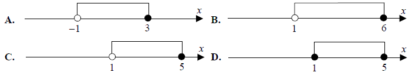
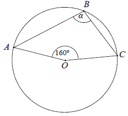

Matura 2011 maj
Poziom rozszerzony:
Wskaż nierówność, którą spełnia liczba \(\pi \)
A.\( |x+1|>5 \)
B.\( |x-1|\lt 2 \)
C.\( \left |x+\frac{2}{3} \right |\le 4 \)
D.\( \left |x-\frac{1}{3} \right |\ge 3 \)
C
Pierwsza rata, która stanowi \(9\%\) ceny roweru, jest równa \(189\) zł. Rower
kosztuje
A.\( 1701 \) zł
B.\( 2100 \) zł
C.\( 1890 \) zł
D.\( 2091 \) zł
B
Wyrażenie \(5a^2-10ab+15a\) jest równe iloczynowi
A.\( 5a^2(1-10b+3) \)
B.\( 5a(a-2b+3) \)
C.\( 5a(a-10b+15) \)
D.\( 5(a-2b+3) \)
B
Układ równań \(\begin{cases} 4x+2y=10\\ 6x+ay=15 \end{cases} \) ma nieskończenie
wiele rozwiązań, jeśli
A.\( a=-1 \)
B.\( a=0 \)
C.\( a=2 \)
D.\( a=3 \)
D
Rozwiązanie równania \(x(x+3)-49=x(x-4)\) należy do
przedziału
A.\( (-\infty ,3) \)
B.\( (10,+\infty ) \)
C.\( (-5,-1) \)
D.\( (2,+\infty ) \)
D
Najmniejszą liczbą całkowitą należącą do zbioru rozwiązań nierówności
\(\frac{3}{8}+\frac{x}{6}\lt \frac{5x}{12}\) jest
A.\( 1 \)
B.\( 2 \)
C.\( -1 \)
D.\( -2 \)
B
Wskaż, który zbiór przedstawiony na osi liczbowej jest zbiorem liczb spełniających
jednocześnie następujące nierówności: \(3(x - 1)(x - 5) \le 0\) i \(x >
1\). 
C
Wyrażenie \(\log_4(2x - 1)\) jest określone dla
wszystkich liczb \(x\) spełniających warunek
A.\( x\le \frac{1}{2} \)
B.\( x>\frac{1}{2} \)
C.\( x\le 0 \)
D.\( x>0 \)
B
Dane są funkcje liniowe \(f(x)=x-2\) oraz \(g(x)=x+4\) określone dla wszystkich
liczb rzeczywistych \(x\). Wskaż, który z poniższych wykresów jest wykresem funkcji \(h(x)=f(x)\cdot
g(x)\) 
A
Funkcja liniowa określona jest wzorem \(f(x) = -\sqrt{2}x + 4\). Miejscem zerowym
tej funkcji jest liczba
A.\( -2\sqrt{2} \)
B.\( \frac{\sqrt{2}}{2} \)
C.\( -\frac{\sqrt{2}}{2} \)
D.\( 2\sqrt{2} \)
D
Dany jest nieskończony ciąg geometryczny \((a_n)\), w którym \(a_3=1\) i
\(a_4=\frac{2}{3}\). Wtedy
A.\( a_1=\frac{2}{3} \)
B.\( a_1=\frac{4}{9} \)
C.\( a_1=\frac{3}{2} \)
D.\( a_1=\frac{9}{4} \)
D
Dany jest nieskończony rosnący ciąg arytmetyczny \((a_n)\) o wyrazach dodatnich.
Wtedy
A.\( a_4+a_7=a_{10} \)
B.\( a_4+a_6=a_3+a_8 \)
C.\( a_2+a_9=a_3+a_8 \)
D.\( a_5+a_7=2a_8 \)
C
Kąt \(\alpha \) jest ostry i \(\cos \alpha =\frac{5}{13}\). Wtedy
A.\( \sin \alpha =\frac{12}{13} \) oraz \(\operatorname{tg} \alpha =\frac{12}{5}\)
B.\( \sin \alpha =\frac{12}{13} \) oraz \(\operatorname{tg} \alpha =\frac{5}{12}\)
C.\( \sin \alpha =\frac{12}{5} \) oraz \(\operatorname{tg} \alpha =\frac{12}{13}\)
D.\( \sin \alpha =\frac{5}{12} \) oraz \(\operatorname{tg} \alpha =\frac{12}{13}\)
A
Wartość wyrażenia \(\frac{\sin^2 38^\circ +\cos^2 38^\circ -1}{\sin^2 52^\circ
+\cos^2 52^\circ +1}\) jest równa
A.\( \frac{1}{2} \)
B.\( 0 \)
C.\( -\frac{1}{2} \)
D.\( 1 \)
B
W prostopadłościanie \(ABCDEFGH\) mamy: \(|AB| = 5, |AD| = 4, |AE| = 3\). Który z
odcinków \(AB, BG, GE, EB\) jest najdłuższy?

A.\( AB \)
B.\( BG \)
C.\( GE \)
D.\( EB \)
C
Punkt \(O\) jest środkiem okręgu. Kąt wpisany \(\alpha \) ma miarę 
A.\( 80^\circ \)
B.\( 100^\circ \)
C.\( 110^\circ \)
D.\( 120^\circ \)
B
Wysokość rombu o boku długości \(6\) i kącie ostrym \(60^\circ\) jest równa
A.\( 3\sqrt{3} \)
B.\( 3 \)
C.\( 6\sqrt{3} \)
D.\( 6 \)
A
Prosta \(k\) ma równanie \(y=2x-3\). Wskaż równanie prostej \(l\) równoległej do
prostej \(k\) i przechodzącej przez punkt \(D\) o współrzędnych \((-2,1)\).
A.\( y=-2x+3 \)
B.\( y=2x+1 \)
C.\( y=2x+5 \)
D.\( y=-x+1 \)
C
Styczną do okręgu \((x - 1)^2 + y^2 - 4 = 0\) jest
prosta równaniu
A.\( x=1 \)
B.\( x=3 \)
C.\( y=0 \)
D.\( y=4 \)
B
Pole powierzchni całkowitej sześcianu jest równe \(54\). Długość przekątnej tego
sześcianu jest równa
A.\( \sqrt{6} \)
B.\( 3 \)
C.\( 9 \)
D.\( 3\sqrt{3} \)
D
Objętość stożka o wysokości \(8\) i średnicy podstawy \(12\) jest równa
A.\( 124\pi \)
B.\( 96\pi \)
C.\( 64\pi \)
D.\( 32\pi \)
B
Rzucamy dwa razy symetryczną sześcienną kostką do gry. Prawdopodobieństwo
otrzymania sumy oczek równej trzy wynosi
A.\( \frac{1}{6} \)
B.\( \frac{1}{9} \)
C.\( \frac{1}{12} \)
D.\( \frac{1}{18} \)
D
Uczniowie pewnej klasy zostali poproszeni o odpowiedź na pytanie: „Ile osób liczy
twoja rodzina?” Wyniki przedstawiono w tabeli:
Średnia liczba osób w rodzinie dla uczniów tej klasy jest równa \(4\). Wtedy liczba \(x\)
jest równa
| Liczba osób w rodzinie | Liczba uczniów |
| \(3\) | \(6\) |
| \(4\) | \(12\) |
| \(x\) | \(2\) |
A.\( 3 \)
B.\( 4 \)
C.\( 5 \)
D.\( 7 \)
D
Rozwiąż nierówność \(3x^2-10x+3\le 0\).
\(x\in \left\langle \frac{1}{3}; 3 \right\rangle \)
Uzasadnij, że jeżeli \(a + b = 1\) i \(a^2 + b^2 = 7\), to \(a^4 + b^4 = 31\).
Na rysunku przedstawiono wykres funkcji \(f\).  Odczytaj z wykresu i zapisz:
Odczytaj z wykresu i zapisz:
Odczytaj z wykresu i zapisz: - zbiór wartości funkcji \(f\),
- przedział maksymalnej długości, w którym \(f\) jest malejąca.
a) \(\langle -2;3 \rangle \)
b) \(\langle -2;2 \rangle \)
Liczby \(x, y, 19\) w podanej kolejności tworzą ciąg arytmetyczny, przy czym
\(x+y=8\). Oblicz \(x\) i \(y\).
\(x=-1\), \(y=9\)
Kąt \(\alpha \) jest ostry i \(\frac{\sin \alpha }{\cos \alpha }+\frac{\cos \alpha
}{\sin \alpha }=2\). Oblicz wartość wyrażenia \(\cos \alpha \cdot \sin \alpha \).
\(\frac{1}{2}\)
Dany jest czworokąt \(ABCD\), w którym \(AB \parallel CD\). Na boku \(BC\) wybrano
taki punkt \(E\), że \(|EC|=|CD|\) i \(|EB|=|BA|\). Wykaż, że kąt \(AED\) jest prosty.
Ze zbioru liczb \(\{1 ,2, 3,..., 7\}\) losujemy kolejno dwa razy po jednej liczbie
ze zwracaniem. Oblicz prawdopodobieństwo wylosowania liczb, których suma jest podzielna przez \(3\).
\(\frac{16}{49}\)
Okrąg o środku w punkcie \(S=(3,7)\) jest styczny do prostej o równaniu \(y=2x-3\).
Oblicz współrzędne punktu styczności.
\(\left(\frac{23}{5}; \frac{31}{5}\right)\)
Pewien turysta pokonał trasę \(112\) km, przechodząc każdego dnia tę samą liczbę
kilometrów. Gdyby mógł przeznaczyć na tę wędrówkę o \(3\) dni więcej, to w ciągu każdego dnia mógłby
przechodzić o \(12\) km mniej. Oblicz, ile kilometrów dziennie przechodził ten turysta.
\(28\) km
Punkty \(K\), \(L\) i \(M\) są środkami krawędzi \(BC\), \(GH\) i \(AE\) sześcianu
\(ABCDEFGH\) o krawędzi długości \(1\) (zobacz rysunek). Oblicz pole trójkąta \(KLM\). 
\(\frac{3\sqrt{3}}{8}\)